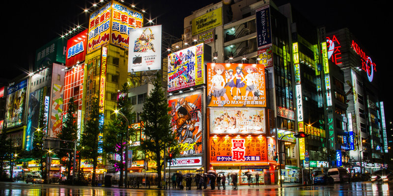

Akihabara
Every electronic gadget imaginable can be found in the stores of this hi-tech, neon-lit neighborhood. The Sony Plaza is one of the most popular shopping destinations in the district.
Every electronic gadget imaginable can be found in the stores of this hi-tech, neon-lit neighborhood. The Sony Plaza is one of the most popular shopping destinations in the district.
This dense center of apartments, offices, hotels, restaurants, shops, museums and movie theaters is the new cultural heart of Tokyo.
Shibuya Crossing is an extremely busy and famous pedestrian scramble crossing in the fashionable Shibuya district. Shibuya Crossing is an iconic scene and frequently used to depict how busy Tokyo is.
Omotesando shopping is typified by big, expensive international fashion brands (including of course brands from Japan), exclusive one-off boutiques, galleries, and cafes.
The Ginza is Tokyo's most famous upmarket shopping, dining and entertainment district, featuring numerous department stores, boutiques, art galleries, restaurants, night clubs and cafes.